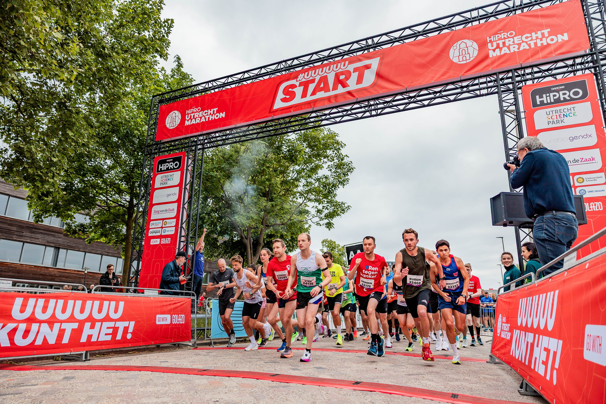
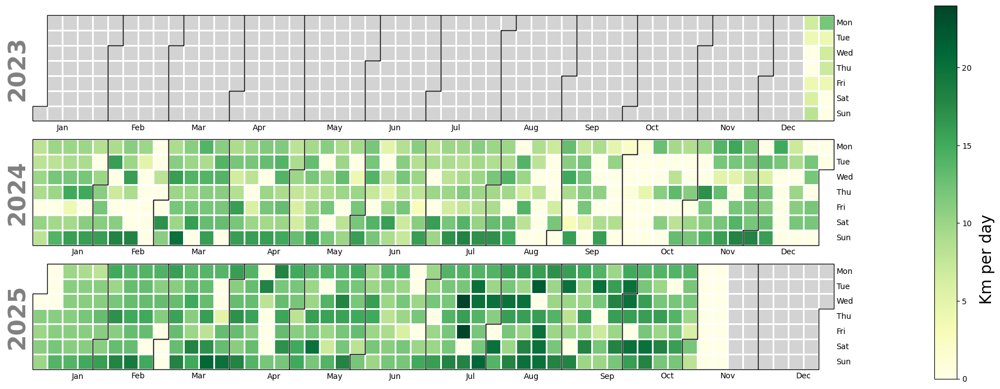
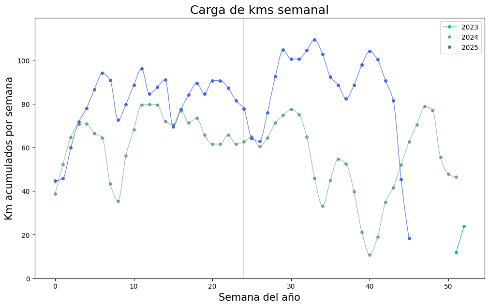
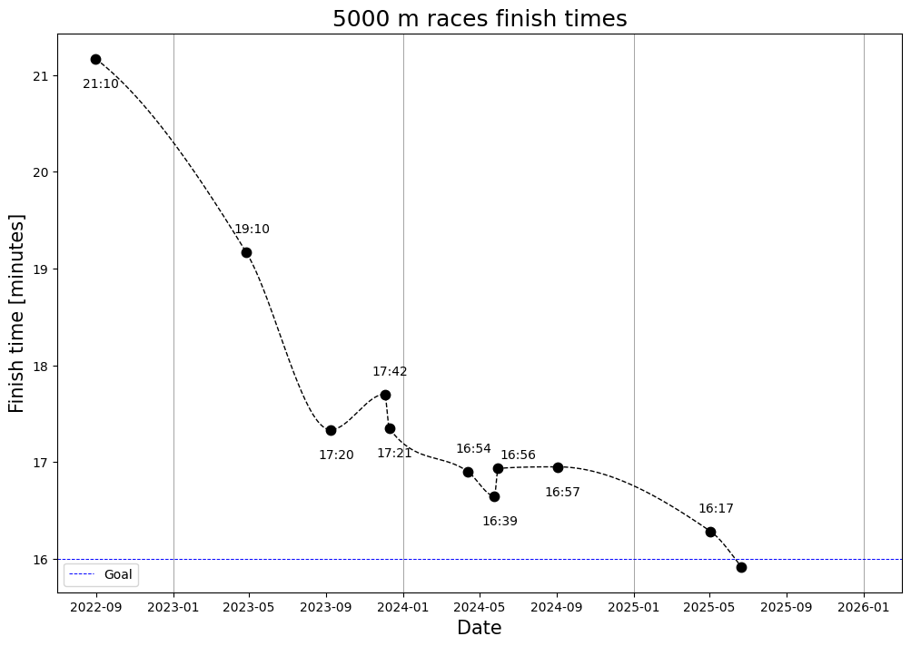
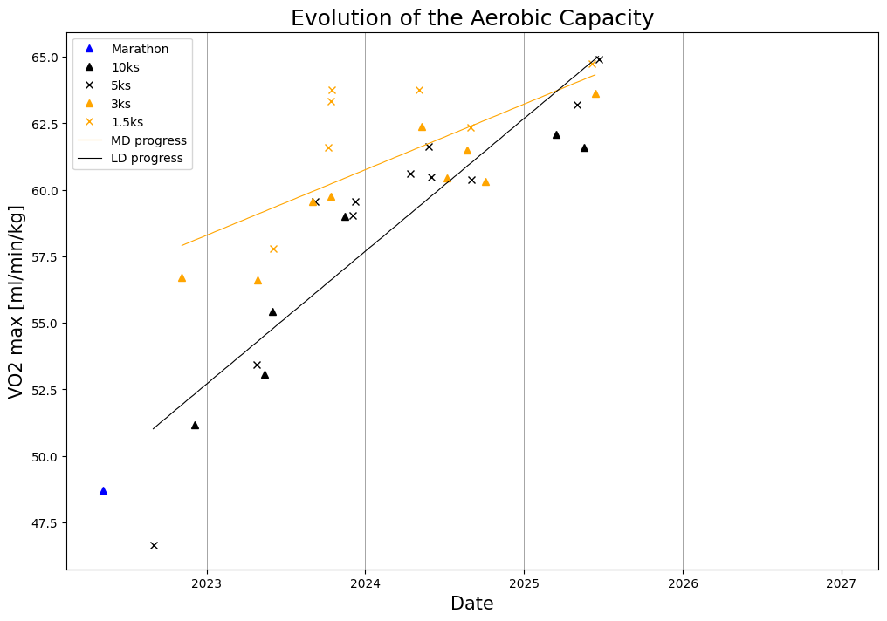

Running
My Running Statistics
Since 2023 I decided to track my progress by saving my stats. This allowed me to create plots like the following, showing the kilometers ran each day.

A similar plot shows the training load on my body, calculated by convolving weekly volume with the previous four weeks. It helps me maintain high volume without overloading.

My Progress
Here you can see my progress over the last years. The next chart shows how I’ve evolved in the 5000m race.

I've converted race times into estimated oxygen consumption. This shows progress across all distances. I tend to improve faster in long distances, but my strengths seem to be in the shorter ones.

Personal Bests
| Race | Time | Date | Location |
|---|---|---|---|
| 1500 m | 4:15 | May 22, 2026 | Utrecht, Netherlands |
| 3000 m | 9:02 | Mar 7, 2026 | Apeldoorn, Netherlands |
| 5000 m | 15:46 | Jun 14, 2026 | Groningen, The Netherlands |
| 10000 m | 34:20 | March 15, 2025 | Groningen, The Netherlands |
| 3000 m SC | 10:33 | Nov 16, 2023 | Temuco, Chile |